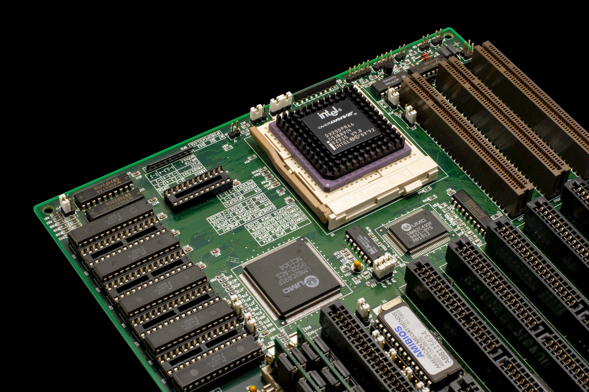
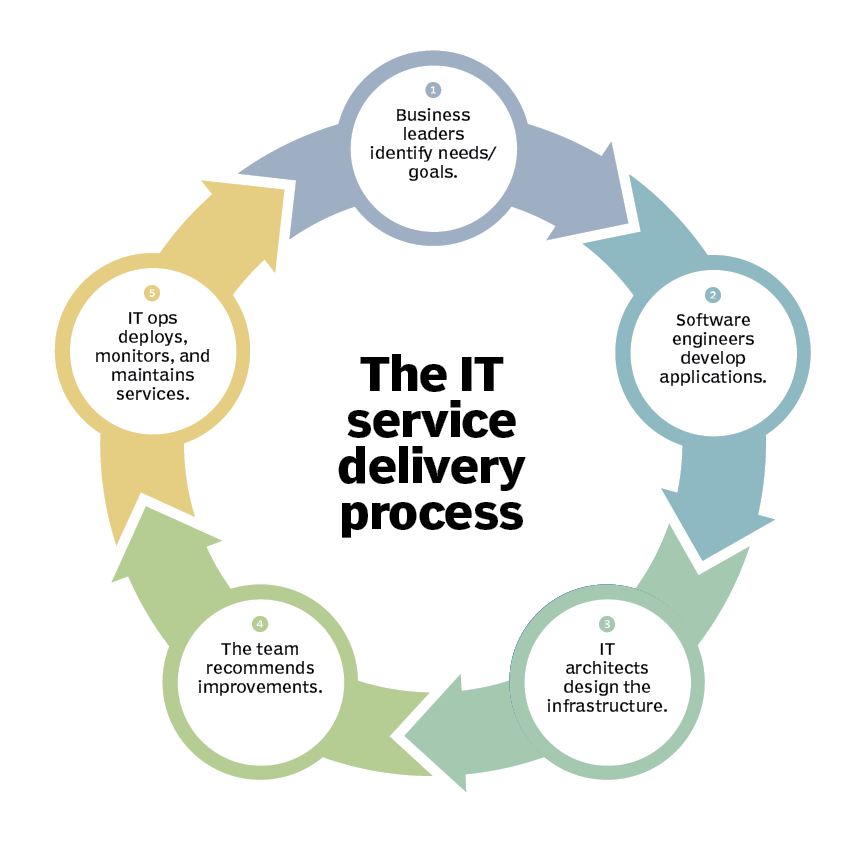

Core Green Software Solutions
since 2020

" CORE GREEN is an IT services, solutions organization that has been partnering with many of the world’s largest businesses in their transformation journeys for over 15 years. "
" Software is our craft and our passion. At CORE GREEN software solutions, we create beautiful software to solve business problems. We believe that software is the ultimate product of the mind and the hands. "
" CORE GREEN software solutions is seen as a benchmark in its outreach to investors, in its transparency and disclosures, publicly communicating its strategy, risks and opportunities, reducing information asymmetries and enabling fair valuation of the stock. "
" CORE GREEN is also a part of Embedded software devolopement specializing in Product Development, R&D and Innovation. We partner with our clients and help them translate ideas into products. With expertise in Product Engineering, R&D and Innovation, we work with special focus on the Automotive, Traffic, Retail, Manufacturing & Energy. "
About Core Green Software Solutions
Core Green Software Solutions is one of the largest multinational IT service and consulting companies. It is headquartered in Mumbai, India, but has offices globally. Core Green is well known in the e-governance, banking and financial services, telecommunications, education and healthcare markets.
Won a very large contract from a Fortune 100 US company, further expanding the long-standing partnership, to transform the technology at its global data centers into a future-ready, hybrid cloud stack for greater agility, flexibility, and improved operational resilience. Core Green will also deploy a new cognitive-powered operating model to run that stack, to improve the availability of business applications and enhance user experience.
Announced a new organization structure designed to provide a curated experience to each customer depending on where they are in the customer relationship lifecycle journey. Leveraging Core Green’s large and deep bench of leadership talent, the new structure further deepens the customer-centricity that Core Green was always known for and is expected to help make Core Green the preferred growth and transformation partner to more of its clientele.
Recognized as a Superbrand in Singapore for the first time, following recognition as a UK Superbrand for the seventh consecutive year. The latter acknowledges the company’s exceptional business growth, its position as the top strategic IT player by revenue in the UK, its number one ranking in customer satisfaction, and its community initiatives.
Partnered with the Australian Energy Market Operator (AEMO) to implement the switch from 30-minute settlement to 5-minute settlement in the national wholesale electricity spot market. The shorter settlement window, enabled by a cloud-based solution designed by Core Green Softwares, is expected to provide a better price signal for investment in faster response technologies, such as batteries and gas peaking generators.
Core Green Softwares is committed to spending your money wisely. We invest more in product development and customer support than in sales and marketing. It always struck us as paradoxical to charge the customer extra for the privilege of marketing back to them. By keeping our cost of attracting customers low, we keep our prices affordable and pass the savings onto our users.
We’re gentle in our sales approach, so we don't push our people to push you. You won’t find us trying to endlessly upsell you, or buying your loyalty through multi-year contracts. And with growth that regularly outstrips our competitors, we know that this model works.
Our Working Process
Job opportunities
Web Developers
Develop new components based on design specs.
Work independently and write maintainable code.
Understand existing code and suggest optimization in terms of functionality and performance.
Work on client frameworks for caching and develop reusable components.
Software Developers
Design and develop high-volume, low-latency applications for mission-critical systems, ensuring top-tier availability and performance.
Contribute to all phases of the product development lifecycle.
Write well-designed, testable, and efficient code.
Ensure designs comply with specifications.
Prepare and produce releases of software components.
Support continuous improvement by investigating alternate technologies and presenting these for architectural review.
UI/UX Designers
Help build design work across multiple mediums on various projects, from small pieces to multi-channel campaigns.
Build digital assets for marketing campaigns that align with the look and feel of those campaigns across other touch points.
Assist in the planning and creation of designs for marketing automation campaigns to include email, social media, and PPC.
Design dynamic and static banners for Google Display Network and other 3rd party networks.
Technical Support Engineers
Provide voice-based support to international/domestic customers over the phone (Inbound and Outbound).
Build a rapport with customers with clear and confident communication.
Focus on customer satisfaction and first-time-resolution.
Engage with the technical team to provide faster resolutions to technical issues.